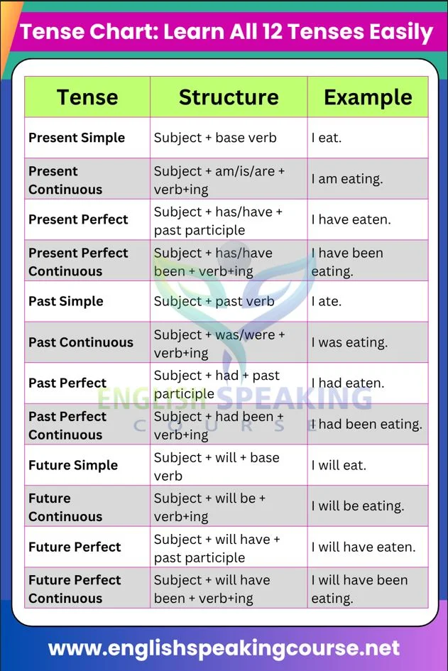

Tense
Tense ใช้บอกว่าเหตุการณ์เกิดขึ้น เมื่อไร และมีลักษณะอย่างไร เช่น กำลังเกิดขึ้น เกิดขึ้นแล้ว หรือเกิดขึ้นต่อเนื่อง
ภาษาอังกฤษมี 12 Tenses แต่สามารถทำความเข้าใจจาก 3 ช่วงเวลา × 4 รูปแบบ Present = ปัจจุบัน Past = อดีต Future = อนาคต
4 รูปแบบ Simple = เหตุการณ์ทั่วไป/ข้อเท็จจริง Continuous = กำลังดำเนินอยู่ Perfect = เกิดขึ้นแล้ว/มีความสัมพันธ์กับอีกช่วงเวลา Perfect Continuous = เกิดต่อเนื่องมาเป็นระยะเวลา
4.1 Present Simple
ใช้กับ สิ่งที่ทำเป็นประจำ ข้อเท็จจริง นิสัย ตารางเวลา โครงสร้าง S + V1 แต่ He/She/It ต้องเติม s/es I go to school every day. She goes to school every day. คำบอกเวลาที่พบบ่อย: every day, always, usually, often, sometimes, never
4.2 Present Continuous
ใช้กับเหตุการณ์ที่ กำลังเกิดขึ้นในขณะพูด โครงสร้าง S + am/is/are + V-ing I am studying now. She is eating lunch. They are playing football. คำที่พบบ่อย: now, right now, at the moment4.3 Present Perfect
ใช้กับเหตุการณ์ที่ เกิดขึ้นแล้วและมีความเกี่ยวข้องกับปัจจุบัน หรือประสบการณ์ โครงสร้าง S + have/has + V3 I have finished my homework. She has visited Japan.
4.4 Present Perfect Continuous
ใช้กับเหตุการณ์ที่ เริ่มในอดีตและดำเนินต่อเนื่องมาถึงปัจจุบัน โครงสร้าง S + have/has been + V-ing I have been studying for two hours. ฉันเรียนหนังสือมาเป็นเวลา 2 ชั่วโมงแล้ว
Past Tense4.5 Past Simple
ใช้กับเหตุการณ์ที่ เกิดขึ้นและจบลงแล้วในอดีต โครงสร้าง S + V2 I visited Bangkok yesterday. She went to school last Monday. คำที่พบบ่อย: yesterday, last week, last year, ago
4.6 Past Continuous
ใช้กับเหตุการณ์ที่ กำลังเกิดขึ้นในช่วงเวลาหนึ่งในอดีต โครงสร้าง S + was/were + V-ing I was sleeping at 10 p.m. They were playing football.
4.7 Past Perfect
ใช้เมื่อมีเหตุการณ์ในอดีต 2 เหตุการณ์ และต้องการบอกว่าเหตุการณ์ใดเกิดก่อน โครงสร้าง S + had + V3 I had eaten before she arrived. ฉันกินอาหารแล้วก่อนที่เธอจะมาถึง
4.8 Past Perfect Continuous
ใช้เน้นว่าเหตุการณ์หนึ่ง ดำเนินต่อเนื่องเป็นระยะเวลาหนึ่งก่อนเกิดอีกเหตุการณ์ในอดีต โครงสร้าง S + had been + V-ing I had been studying for two hours before my friend called.
Future Tense
4.9 Future Simple
ใช้กับเหตุการณ์ที่จะเกิดขึ้นในอนาคต การตัดสินใจ ณ ตอนพูด หรือการคาดการณ์ โครงสร้าง S + will + V1 I will study tomorrow. She will help you.
4.10 Future Continuous
ใช้กับเหตุการณ์ที่ กำลังดำเนินอยู่ในช่วงเวลาหนึ่งของอนาคต โครงสร้าง S + will be + V-ing I will be studying at 8 p.m. tomorrow.
4.11 Future Perfect
ใช้กับเหตุการณ์ที่จะ เสร็จสิ้นก่อนเวลาหนึ่งในอนาคต โครงสร้าง S + will have + V3 I will have finished my homework by 8 p.m.
4.12 Future Perfect Continuous
ใช้เน้นว่าเหตุการณ์จะ ดำเนินต่อเนื่องเป็นระยะเวลาหนึ่งจนถึงจุดหนึ่งในอนาคต โครงสร้าง S + will have been + V-ing By next year, I will have been studying English for three years.
